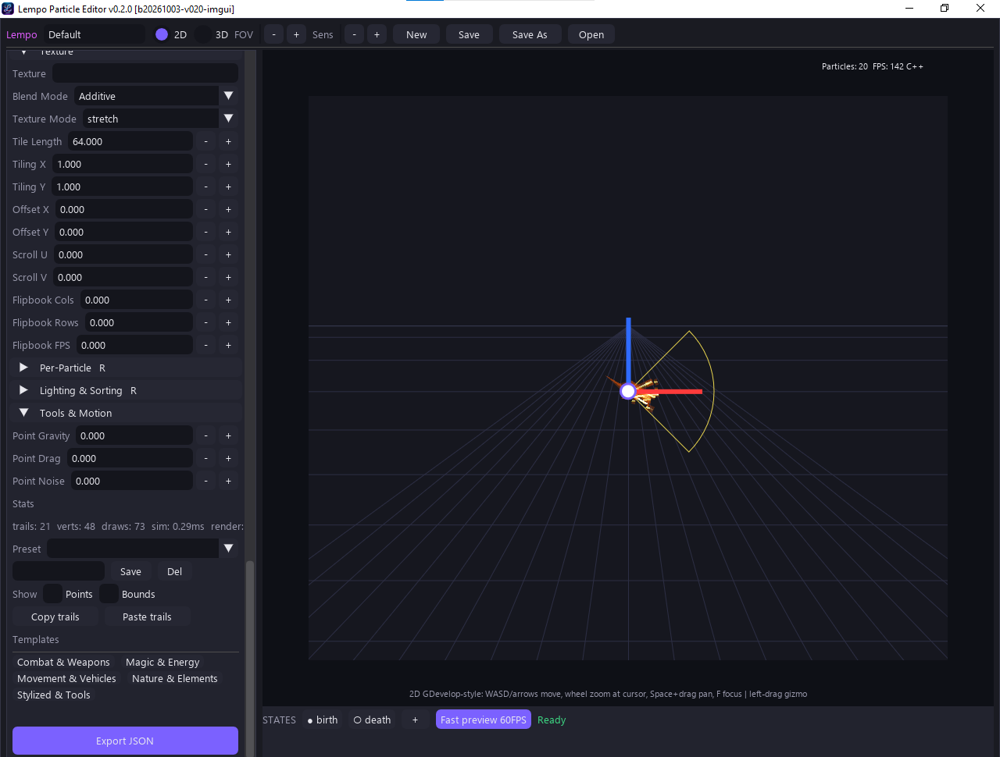
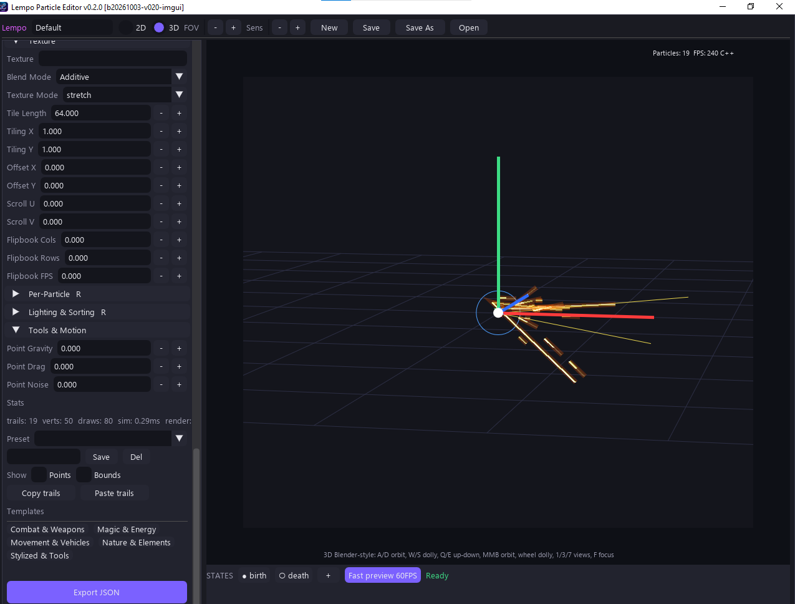
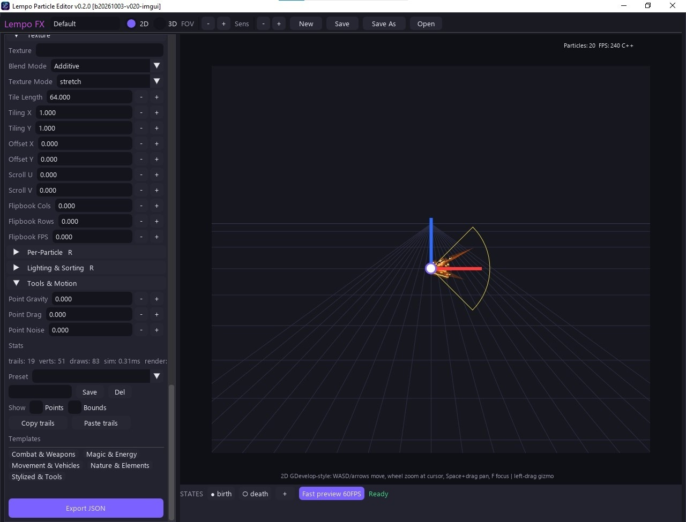
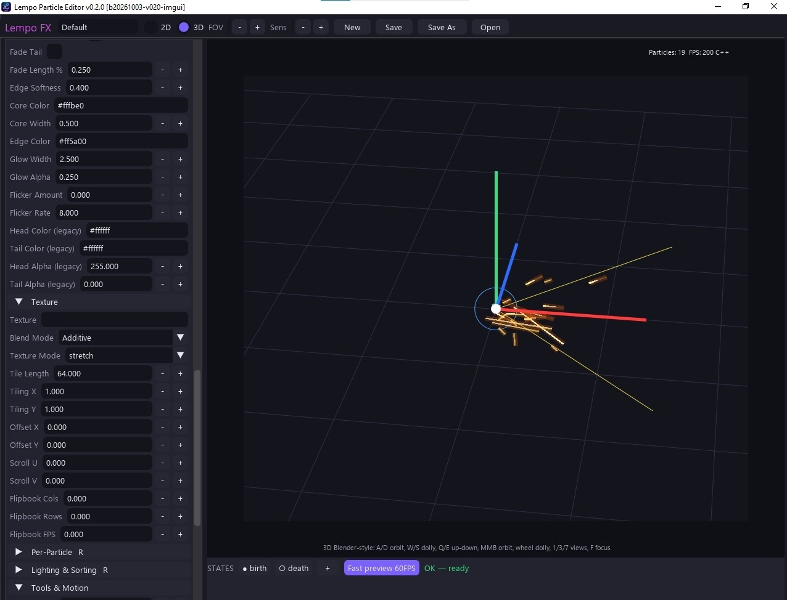

Trails & Ribbons v0.2.0
A dedicated mode for ribbon effects — sword slashes, magic beams, projectile trails — with a Unity-style inspector, curve editors and 27 ready-made templates. Trail math and data contracts are shared where documented, while rendering and simulation remain runtime-specific across the editor, browser preview and GDevelop.
Modes
Choose 2D | Trails & Ribbons (key 4) or
3D | Trails & Ribbons (key 5) in the startup dialog:
- Trail mode renders ribbons only (the
trails_on()gate skips dots + raster). - Particle mode keeps dots + overlay (per-particle trails on top).


Inspector
A Unity-style inspector with foldouts Trail / Shape / Color / Texture /
Per-Particle / Lighting & Sorting / Tools & Motion, generated from one schema
(TRAIL_SCHEMA, 79 keys):
- width / gradient curve editors
- tooltips, min/max clamps, drag-labels, steppers
- per-section reset + copy/paste
- template browser — 27 ready-made templates across combat / magic / movement / nature / stylized, with search, favorites, and your own saved presets


Curves bake to 64-sample and gradients to 256-entry LUTs on change only; the C++ core parses the same tables and is covered by the trail parity tests.
| Inspector section | Highlights |
|---|---|
| Trail | Fade tail/length, edge softness, core/edge/glow colors & widths, flicker, legacy head/tail colors |
| Texture | Texture slot, blend mode, texture mode (stretch/ tile), tile length, tiling X/Y, offset X/Y, scroll U/V, flipbook cols/rows/FPS |
| Per-Particle | Size/alpha jitter and inherit-color |
| Lighting & Sorting | 3D lighting response and draw order |
| Tools & Motion | Point gravity/drag/noise, stats, presets, copy/paste trails |
Emit mode
| Mode | Behavior |
|---|---|
time | Legacy — lifetime gates; the particle lives, then fades. |
distance | Godot-style — fixed sections ×
sectionLength, speed-independent, the trail dies with the particle.
sectionLength=0 gives an every-frame FIFO tick, like the Trail2D addon. |
Templates
The template browser lives at the bottom of the trail inspector — categories like
Combat & Weapons, Magic & Energy, Movement & Vehicles,
Nature & Elements, Stylized & Tools. Applying a template overwrites
only trail settings (emitter/states are untouched), so hybrid spark looks come
from your live particles via per-particle trails + inheritColor.
Adding a new template
Drop one JSON file in assets/presets/trails/<category>/<id>.json,
where category is one of combat | magic | movement | nature | stylized.
No UI or C++ changes needed.
{
"id": "",
"name": "",
"category": "",
"description": "",
"tags": [],
"modes": ["2d", "3d"],
"settings": {}, // partial trail fields
"overrides_2d": {},
"overrides_3d": {},
"texture": "dots|null", // closest supported procedural; editor falls back gracefully
"textureHiFi": "", // deferred-runtime G5 id, e.g. slash_streak
"version": 1,
"artNotes": "", // one sentence: what it must look like
"demoMotion": "" // reserved parametric path id, player deferred
}Rules:
- Curves are
[[x, y(, mode)]]key lists. - Gradients are
[[x, "#rrggbb"(, mode)]](color) or[[x, a(, mode)]](alpha) stop lists. - Field names and ranges come from
TRAIL_SCHEMA. Unknown fields are ignored; bad values fall back with a warning. - Missing fields fall back to schema defaults.
C++ API surface
particle_core, raw C API:
| Function | Returns |
|---|---|
templates_init(schema, user_dir) | — |
templates_register(id, data, is_user) | — |
templates_list(category, query, mode, sort, fav_only) | [ids] |
templates_info(id) | template info |
templates_apply(id, mode, defaults, current) | (settings, changed_ids) |
templates_thumbnail(id, w, h) | (w, h, bytes) |
templates_texture(kind, w, h) | texture data |
templates_fav(id, on) | — |
presets_save(name, settings, meta) | path |
presets_delete(name) | — |
| Layer | Responsibility |
|---|---|
| C++ | Registry, validation, search, merge, LUT-ready data, thumbnails, textures, preset files |
Python (editor/trail_templates_ui.py) |
Builds Dear PyGui widgets, forwards clicks/keys to one core call, and
set_values the changed widgets |
hideParticle honored — no new
objects needed. See the GDevelop Guide.